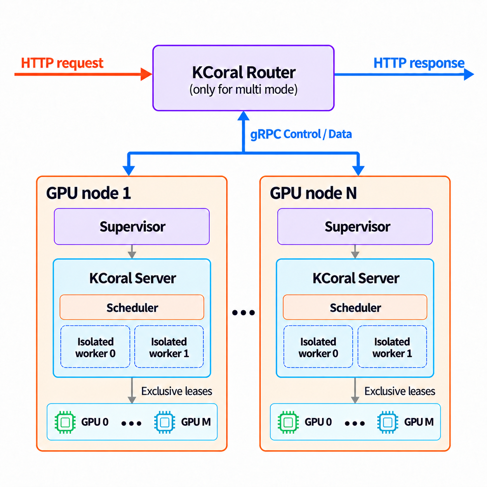

Launch the router¶
Note
Routed deployments are currently supported only on Linux.
The Router gives clients a stable address for a changing pool of compute nodes. Instead of connecting to individual machines, clients send programs to the Router, which selects an available node for each request. You can add capacity, replace a machine, or take a node offline without changing the address clients use. This separates the lifetime of the client endpoint from that of the GPU machines doing the work.

Start a Router and a node¶
Install the KCoral package on the Router
host and the server environment
on each compute node. Use the same KCoral version across the deployment.
Prebuilt packages include the Router and node supervisor; when installing from
source, build them with KCORAL_BUILD_RUST=1 (see Install in editable mode).
Warning
KCoral allows clients to execute arbitrary code on its workers. Only allow trusted clients to access your KCoral server or Router. Deploy on a trusted, isolated network and never expose these endpoints to the public internet. Run workers in a sandbox with restricted permissions and access to host resources.
To try a routed deployment on one GPU machine, start the Router in one terminal:
kcoral router --host 127.0.0.1 --port 9000
In a second terminal, start a node:
kcoral server --router http://127.0.0.1:9000 --node-id gpu-a
The Router listens on port 9000. The second command starts a supervisor and
its local KCoral server on GPU 0 by default. The node
registers as gpu-a and becomes available once its server is healthy and ready
to receive work. The Router itself does not execute programs or need a GPU.
Check the deployment through the Router’s address:
curl http://127.0.0.1:9000/health
Once the node is ready, the Router’s /health response reports
"status": "ok", the pool’s GPU target, and its combined request capacity.
Clients use http://127.0.0.1:9000 as their
server URL, with the same Client and Program API used for a standalone
server. See Writing a program for
submitting a request.
How the components work together¶
The two commands above start three components: the Router, a supervisor, and
the KCoral server that the supervisor manages. The machine running that server
is a compute node; in this example, it is registered as gpu-a.
Component |
Role |
|---|---|
Router |
Accepts client requests, selects a healthy node with capacity, and forwards programs and results |
Supervisor |
Starts the node’s KCoral server, reports its health and capacity, and restarts it if it fails |
KCoral server |
Executes programs in its worker pool, just as in a standalone deployment |
kcoral server --router ... starts the supervisor automatically. The supervisor
manages the server’s lifetime; programs and results pass between the Router
and the server directly.
Common settings¶
Router
--host 127.0.0.1and--port 9000default to local access on port9000. Use--host 0.0.0.0to accept connections over a trusted network.On the server,
--routerspecifies which Router to join, and--node-ididentifies the node. Give each node a distinct identifier and keep it stable across restarts.The Router can require a shared token before allowing nodes to join. This check is optional and disabled by default, so nodes can connect without a token. To enable it, set the
KCORAL_NODE_TOKENenvironment variable to the same value on the Router and each node before launching them, or pass--node-tokenon both commands. The Router then rejects node connections with a missing or incorrect token. This check does not authenticate clients or encrypt traffic.
To use separate machines, start the Router with --host 0.0.0.0 on a host
reachable over your trusted network. Replace 127.0.0.1 in node and client URLs
with that host’s address, and give each node a distinct --node-id. Nodes can
join and leave while clients continue using the same Router address.
Nodes sharing a Router must have matching GPU targets and runtime versions; incompatible nodes cannot receive work. Use separate Routers for different GPU architectures or runtime environments.
Recover from failures and stop nodes¶
A routed deployment can keep serving requests when a node becomes unavailable, as long as other compatible nodes have capacity. The supervisor monitors its local server and restarts it if it fails or stops responding. If the node loses its Router connection, it attempts to reconnect while continuing to monitor the server.
Requests already running on a failed node may be interrupted. What clients see depends on whether the request had started:
Situation |
Client-visible behavior |
|---|---|
The queue is full or the wait for capacity expires |
HTTP 503; the request has not been sent to a node and can be retried |
A connection to a node fails after work may have started |
HTTP 502; execution may have occurred, so the Router does not automatically retry the request |
The client disconnects |
Work may still be running on the node; disconnecting does not guarantee that it stops |
To stop a node you launched in a terminal, press Ctrl+C in that terminal.
The node stops accepting new work and waits for active requests to finish before
exiting. A background node can be stopped the same way with a SIGTERM signal,
for example kill <pid>, where <pid> is the process ID of kcoral server.
If you use a tool such as systemd to run the node as a background service, allow
enough time in its stop timeout for your longest requests to finish. Forcing
the process to stop before then can interrupt those requests.
Recovery from an unresponsive server is different: the supervisor cannot wait indefinitely for its requests to finish. It asks the server to stop, then forces it to exit if necessary so a replacement can restore the node’s capacity. The supervisor options control this wait and the health checks.
As described in the server cache configuration, each server keeps its own upload caches. A request sent to a different node may need to transfer the same content again, and restarting a server clears its memory cache.
Router and supervisor logs go to the console. Use the request ID to follow a request across Router events and the server logs when diagnosing a failure.
Configuration¶
Router options¶
These options apply to kcoral router. Use kcoral router --help to list them.
For the token, an explicit --node-token overrides KCORAL_NODE_TOKEN.
Router option |
Default |
Meaning |
|---|---|---|
|
|
Router listen address |
|
|
Interval for checking status freshness |
|
|
Maximum age of a node health report |
|
|
Failed observations before removing a ready node |
|
|
Successful observations before a failed node returns |
|
|
Maximum wait for capacity |
|
|
Bound on requests waiting for capacity |
|
|
Retention of disconnected, unused node records |
|
|
Maximum accepted request body size, in bytes |
|
No token, or |
Authenticate node connections |
Node connection and supervisor options¶
These options apply to nodes launched with kcoral server. For execution and
worker settings, see the server configuration.
Explicit command-line options take precedence over environment variables.
Option |
Default |
Environment variable |
Meaning |
|---|---|---|---|
|
Disabled |
|
Router HTTP(S) origin |
|
Unset; required with |
|
Stable identifier for this node |
|
No token |
|
Bearer token for node connections |
The following advanced options control the supervisor’s health checks and
restart behavior. They require --router and are omitted from
kcoral server --help.
Option |
Default |
Meaning |
|---|---|---|
|
|
Interval between health probes and between control heartbeats |
|
|
Timeout for each local health probe |
|
|
Consecutive failed health probes before restarting the server |
|
|
Initial period during which failed health probes do not trigger a restart |
|
|
Healthy running time before resetting restart backoff |
|
|
Grace period before force-killing an unhealthy server during restart; normal shutdown waits for requests to finish |
|
|
Initial restart backoff |
|
|
Maximum restart backoff before jitter |
|
|
Random variation in restart delay, as a fraction; accepted range |